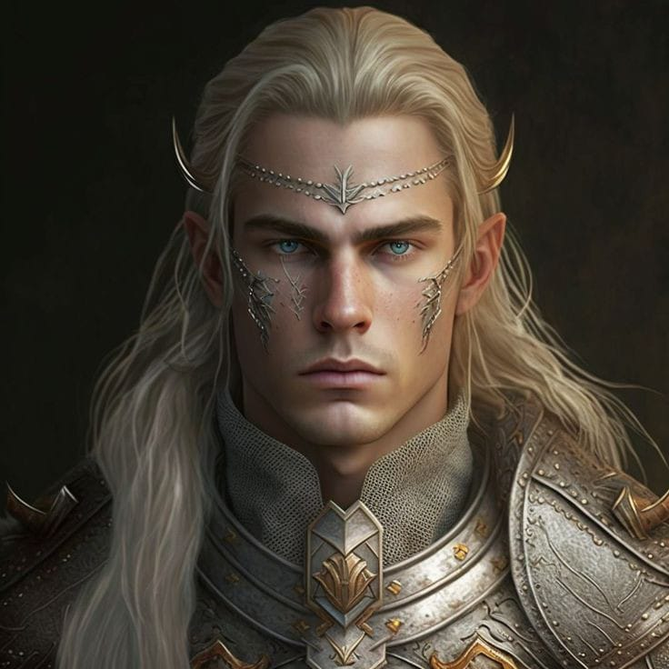
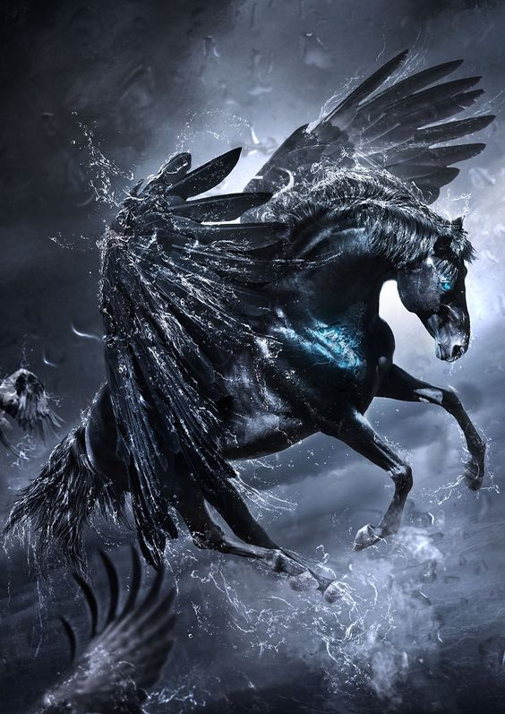

expand_less
Magnus Morgthan, O último de seus decendentes, o resquício da poderosa família Morgthan, onde grandes Mestres e poderosos Magos transformaram uma cidade num império, regida pelos próprios, que foi dizimada, após negar lealdade a Prontera durante o reinado de Tristan I.
Seu objetivo de vida é reerguer sua família a glória e conquistar sua ascensão, ele faria qualquer coisa por isso.
Onde cresceu:
Nasceu no auge na família Morgthan, onde seu pai, Robert Morgthan, o rei destronado, sacrificou sua vida para salvar seu único filho, ainda bebê, o enviando para Prontera para crescer com aliados Magos, que no secreto, o ensinaram sobre seu passado, para sobreviver, e trilhar seu caminho para a Glória. Magnus nunca revelou seu sobrenome verdadeiro, para que não fosse caçado por imperiais, ele guarda esse segredo até hoje.
Coisas e Pessoas:
Magnus mora no castelo, em Prontera, mas em secreto ele procura saber as fraquezas do reino, a intenção das pessoas, afim de o destruir de dentro para fora, sem se arriscar, dividindo informações apenas com uma pessoa.
Amigos:
Hallaster
Magnus respeita e admira seres e pessoas mais poderosas que ele, ele é ambicioso e gostar de aprender com os mais sábios; Hallaster é um exemplo disso, Magnus tem uma gigante admiração pelo grande mestre, e ele procura entender os mistérios que o envolvem.
Atrosh
Um poderoso mago, era o melhor amigo de seu pai, ensinou Magnus sobre seu passado e pretende ajudá-lo num futuro próximo para a Ascensão de sua casa. Atrosh era a mão do rei Robert, ele fugiu com Magnus durante a batalha e o criou como seu filho, pela promessa que fez a Robert, ensinou muito do que sabia e secretamente procura aliados para a grande rebelião.
Segredo:
Filho de uma família inimiga do reino, infiltrado no castelo de Prontera.
Características do personagem:
Destemido, ambicioso, inteligente, observador, sempre busca mais conhecimento e poder, egoísta até certo ponto, não é seu principal objetivo ajudar as pessoas, mas quando o convém ele é uma pessoa boa.
Pégaso Negro

expand_less
Enquanto o homem mascarado ria descontroladamente, a cidade de Prontera parecia estar à beira do colapso. Mas então, um sinal de esperança surgiu no céu. Nuvens escuras começaram a se formar, relâmpagos coloridos iluminavam o céu, e trovões estrondosos ecoavam pelos cantos da cidade em destruição.
Os moradores de Prontera levantaram seus olhos esperançosos para o céu e, em meio à tempestade, podiam ouvir o som de um galope distante. Era como se um cavalo estivesse correndo pelo céu. Então, de repente, as nuvens se abriram e uma luz intensa iluminou toda a cidade. Era o relinchar de um cavalo vindo dos céus.
Quando a luz se dissipou, um majestoso pegasus emergiu, cortando os céus com suas asas poderosas, deixando um rastro de luz azulada por onde passava. Os cidadãos de Prontera estavam maravilhados com a criatura lendária, admirando sua beleza e agilidade. O pegasus era o mensageiro dos deuses e parecia ter vindo para ajudar.
Enquanto a criatura voava, as asas batiam forte contra o vento, espalhando as nuvens e deixando um rastro de luz que iluminava a cidade em ruínas. As chuvas fortes começaram a cair em toda a região, apagando os incêndios e dando início a uma nova esperança para os moradores de Prontera.
Os cidadãos ajoelhavam-se no chão, em reverência à criatura celestial que parecia ter sido enviada pelos deuses para ajudá-los. Os gritos de admiração e gratidão se misturavam à chuva forte, que agora caía com mais intensidade. As chamas que antes consumiam a cidade começavam a se apagar e o cheiro de fumaça dava lugar ao frescor da chuva.
Enquanto todos admiravam a criatura, o homem mascarado permanecia em silêncio, olhando para os céus com seus punhos cerrados, tentando conter uma fúria que crescia dentro dele. Ele sabia que algo havia mudado naquele momento. A chegada do pegasus não era um sinal de paz, mas sim um aviso para ele. Era hora de partir antes que fosse tarde demais.